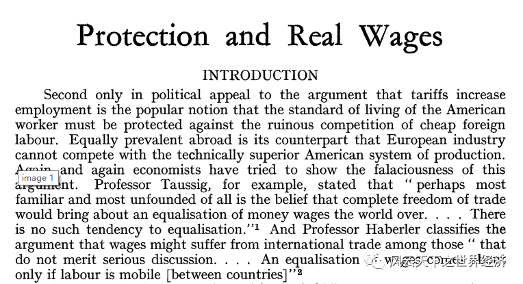
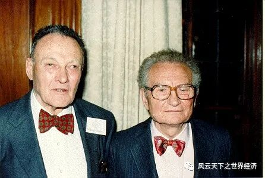
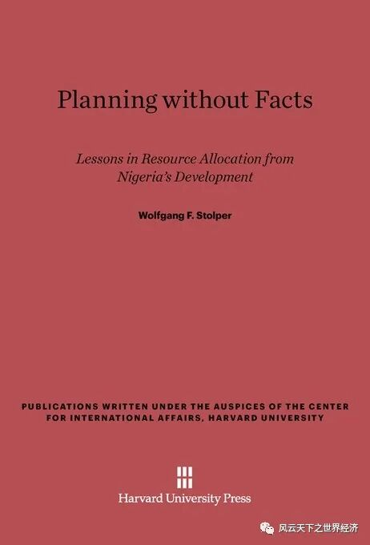

经济学与其他学科有一个显然的差异，那就是自它诞生的那一刻，争吵声就不绝于耳。而以沃尔夫冈·斯托尔帕和保罗·萨缪尔森命名的那个定理显然是新古典贸易理论四大定理中遭遇非议最多的一个。2002年4月，在密歇根州的安娜堡市，89岁高龄的斯托尔帕溘然长逝，但是他留给世人的这个著名定理却依然被喋喋不休的褒贬之声所包围，甚至比他在世的时候更盛。
不管多么寂寂无名的人，他的人生里大抵总有一些时刻如云端漫步，在往后余生的回味中让他面色莞尔。对于经济学家斯托尔帕而言，这一刻一定发生在1991年的密歇根大学。为了纪念该定理发表50周年，该校经济学系举办了声势浩大的志庆仪式。其后经济学家Deardorff和Stern从144篇纪念短文中遴选了一部分，结集出版了图书——《斯托尔帕-萨缪尔森定理——五十年纪念》（The Stolper-Samuelson Theorem：A Golden Jubilee），此举更是将该定理推向了经济学学术殿堂的顶峰。整本文集的作者群星闪耀——Robert E. Baldwin, Jagdish N. Bhagwati, Wilfred Ethier, Ronald W. Jones, Murray C. Kemp, Paul R. Krugman, Edward E. Leamer, Lloyd A. Metzler, Ronald Rogowski, Paul A. Samuelson——几乎囊括了当时在世的所有新古典贸易理论家。
这一刻，沃尔夫冈·斯托尔帕先生藉由一个定理居于新古典经济学舞台的中心，一代宗师的形象尽显。

纪念斯托尔帕-萨缪尔森定理发表50周年文集
该定理与生俱来的三大特质注定其将成为一个伟大的经济理论：重大的现实意义、优雅的分析以及令人惊讶的结论。
作为该文集的主编以及斯托尔帕先生在密歇根大学经济学系的同事，艾伦·迪尔多夫称赞该论文“非同凡响”，因为它证明了一个在非经济学家看来似乎显而易见的现象：与低工资水平的国家进行贸易将会损害高工资国家产业工人的利益。尽管这一结论在反自由贸易人士看来如此显而易见，但是经济学家历来对此不以为然。
伴随着鲜花与掌声的，还有一些不和谐的声音直指这一定理的要害。2007年，《全球化与贫困》一书收录了由哥伦比亚大学的Davis和IMF的Mishra撰写的文章，该文同样也提到了这一定理，不过这一次，舞台换成了审判台。文章光听名字就足够耸人听闻——《斯托尔帕-萨缪尔森已死：兼论其他理论和数据的犯罪》（Stolper-Samuelson Is Dead：And Other Crimes of Both Theory and Data）。如今再读此文，即使是隔着屏幕似乎仍能够感受到作者翻腾的怒意：
“现在是宣布斯托尔帕-萨缪尔森定理死亡的时候了。该定理认为，贸易自由化会提高穷国丰裕要素（非熟练劳动力）的实际收入。这一点在理论上来说毫无疑问是正确的。但是，如果我们将它应用于现实，就像过去我们经常做的那样，似乎把它当成一个追问人类存在终极意义的稳妥答案，那么这非但是大错特错，而且是非常危险的。”
尽管是斯托尔帕在Swarthmore学院以及萨缪尔森在MIT的学生，Ronald Jones 似乎更能平衡个人感情和科学价值之间的关系，他在2006年撰写了《保护主义和实际工资：一个思想的历史》一文，全景式地回顾了SS定理提出之后，大量文献围绕该定理的局限性所做的诸般努力。记述了SS定理从2×2×2低维度向n×n×n高维度迈进过程中，萨缪尔森、梅茨勒、琼斯等一代经济学人所作出的卓绝努力以及其中所体现的治学精神，在不着痕迹的批判中充分肯定该定理的学术价值，以及在那个时代理论模型中极为匮乏的现实意义。
与此相比，《经济学人》在2015年的短文《关税和工资：一丝尴尬的真相》（Tariffs and wages：An inconvenient iota of truth）显得要客观公允的多。尽管对于斯托尔帕萨缪尔森定理的局限毫不避讳，但是结合斯托尔帕的人生经历以及其后全球化时代国际贸易的飞速发展，该文丝毫也没有吝惜对于SS定理以及斯托尔帕本人的溢美之词，坚定捍卫着这个定理最后的尊严。

1941年发表于RES的斯托尔帕-萨缪尔森定理
而Stolper本人又是如何看待这个定理的呢？作为一名经济学家，他的学术人生涉猎广泛，从早期的大萧条到晚期的非洲发展问题，他都有珠玑之见。但是对于这个定理，他则是青睐有加。他曾经表示，如果能够再写出一篇像那样的文章，他愿意牺牲自己的左眼。
这是一个什么样的定理
让这个定理长盛不衰的则是其无与伦比的现实意义，即使是在全球化受阻的今天，它也会时常成为反全球化人士的斗争利器，以及产业工人在全球化背景下困苦命运的底色。
现实中的国际贸易是全球化时代最宏大的叙事之一，它既可以是大国政治博弈的筹码，也浸润着升斗小民的日常悲喜。而国际贸易理论更像一幕剧情跌宕的剧，它的前半部分是喜剧，剧本叫做“Trade is great”， 而后半部分则是悲剧，旁白换成了“But it will hurt someone”。不同于亚当·斯密、李嘉图、赫克歇尔和俄林热衷于宣扬他的喜剧部分，SS则更关注他的后半部分——谁将因为贸易而受伤？
不同于大多数经济学定理的艰涩难懂和含糊其辞，SS定理的结论清晰有力。其一般性的表述是：在一个充分竞争的两国两产品和两要素（资本和劳动）的世界里，贸易将会使一国出口品中密集使用的要素受益，而使进口品中密集使用的要素受损。如果这个表述还不够直观的话，那它有一个更加简洁的版本：对于美国而言，按照要素丰裕度进行国际分工，该国将从其他国家（例如中国）进口劳动密集型产品，那么此时如果对进口品征收关税，这无疑将提高美国低技能工人的实际工资水平。
定理中预测的对低技能工人的影响，在2016年-2020年的美国经济和政治中得到了充分体现，它所描述的场景似乎正是当前深陷贸易战泥淖的中美两国人民所经历的。尽管发动贸易战的特朗普不太可能知道斯托尔帕是何许人也，但这不正是前总统先生贸易战背后的底层逻辑吗？而现在已经距离这个定理的提出过了整整80年。
此时，我们似乎看见了凯恩斯嘴角泛起的笑意，因为他曾经说过，“生活在现实中的人，通常自认为能够完全免除于知识的影响，其实往往都还是某些已故经济学家的奴隶。”
沃尔夫冈·斯托尔帕先生和斯托尔帕-萨缪尔森定理
要想追溯这篇文章的前世今生，还需要重回1938年的哈佛大学校园。
此时年满26岁的斯托尔帕刚刚通过哈佛大学的博士论文答辩，并留校担任讲师。如同大多数刚刚步入学术生涯的青年经济学人一样，此时的斯托尔帕在未来研究论题的选择上显得彷徨而茫然四顾。他的博士论文关注的是1930年代的英国房地产市场泡沫以及它与广义货币政策之间的联系问题，这个题目显然与他的导师熊彼特的经济周期理论有着一脉相承的关系。但是斯托尔帕很快发现，这个题目在地广人稀，房产充足的美国并不受欢迎。在盘桓于几个话题之后，斯托尔帕决定投身于当时兼具理论性和现实性的国际贸易话题。

斯托尔帕和萨缪尔森在安娜堡市 (1991年)
斯托尔帕的人生在1941年突然发生了转向，他决意离开哈佛大学。这背后的真实原因现在已经不得而知，或许是为了剪除自己身上挥之不去的熊彼得的影子。因为自从1931年3月的波恩大学起，他就和这位后来成为一代经济学巨擘的 “奥地利学派的坏孩子”有着千丝万缕的关联，他也是一路追随熊彼得才来到波士顿剑桥的。
但是不管怎样，年轻的斯托尔帕已经决意脱离恩师的羽翼单飞。在写给霍巴特学院（Hobart College）院长的求职信中，他详尽地描述了他所受的经济学训练和对未来的发展设想，尽管最终由于薪酬的问题，他拒绝了霍巴特学院而选择的斯沃斯莫尔学院（Sworthmore College）提供的助理教授职位。从这封现存于杜克大学档案馆的求职信原件中，我们可以发现，他在求职信的最后提到“Right now I am finishing another article on Protection and Real Wages”，而就是这篇文章造就了后来大名鼎鼎的斯托尔帕-萨缪尔森定理。
尽管萨缪尔森后来极力把这篇论文原创性归功于斯托尔帕，但是他的诞生与萨缪尔森有着密不可分的关联。此时的萨缪尔森正野心勃勃地用数学改变整个经济学的叙事方式，而首先摆在手术台上的正是由瑞典经济学家赫克歇尔和俄林开创的要素禀赋理论。
该理论认为贸易的动因来自各国国家要素禀赋的差异，这一点与古典经济学家李嘉图基于相对生产率差异的国际分工模式迥然不同。根据他们的理论，一个国家应该出口密集使用自己丰裕要素的产品，而进口密集使用自己稀缺要素的产品，如果按照这种模式进行分工，那么国际贸易将会使全球财富增加而各种要素所有者各得其所。
当萨缪尔森通过HOS模型向斯托尔帕先生优雅地展示这一结论时，聪慧的斯托尔帕向萨缪尔森先生提出了告诫。斯托尔帕先生同意，贸易能刺激更大的经济增长，但并不一定对所有工人都有利。随着国与国之间贸易的上升，价格变化，稀缺性和丰富性开始发挥作用，一些工人的工资将会下降。
在2002年斯托尔帕的追思会上，萨缪尔森还能依稀回忆起当时的情形：
“斯托尔帕带着这个非常重要的见解来找我，我说: ‘这真的很重要。而既有的文献并未述及这一点，你应该把它写下来。’”
“我是斯托尔珀-萨缪尔森定理的助产士，记住是斯托尔帕-萨缪尔森定理，而不是萨缪尔森-斯托尔帕。”他补充说。
贸易理论自20世纪40年代以来有了很大的发展，但斯托尔帕的洞察力仍然是其中的重要组成部分。
如同许多伟大的论文一样，它的发表历程并非一帆风顺。该文最早投给了《美国经济评论》（American Economic Review），但是惨遭拒稿。这封拒稿信后来也因为SS定理的声名鹊起而屡被引用。AER的编辑这样写道：
尽管这篇文章“展现了出色的理论之美”（brilliant theoretical performance），但是却是“对正式理论极为狭隘的研究”（have anything to say about any of the real situations with which the theory of international trade has to concern itself）。
就连萨缪尔森在自己广为认可的经济学教科书在提到该定理时也显得小心翼翼。为了防止被那些不坏好意的人滥用，在承认自由贸易有可能导致美国产业工人的境况变糟之后，他还是稳妥地补充了一个注释：
“虽然大部分经济学家都承认这种情况在理论上存在一定可能，但他们仍然倾向于认为，相对其他更为现实的考量，这一点真相的影响并不会太大。”
萨缪尔森先生的谨慎并没有妨碍SS定理形成广泛的影响。此后高歌猛进的全球化进程让贸易成为经久不衰的话题，而任何与贸易分配效应的探讨都无法绕开斯托尔帕-萨缪尔森定理，以该定理提出的问题为起点，一系列堪称伟大的研究被提出，1948年的要素价格均等化定理、1949年的梅茨勒事件、1971年的特定要素模型……事实证明，这篇论文所产生的影响力足以媲美斯托尔帕和萨缪尔森先生的洞察力。
不过令人唏嘘的是，与诺贝尔经济学奖获得者萨缪尔森先生相比，斯托尔帕先生在理论上再也没有取得与他的洞察力相当的突破，这篇论文成为斯托尔帕一生再也无法超越的高度。
在该论文发表50周年之际，斯托尔帕先生的左眼的确失明了，但是他的余生再没有写出如此充满现实追问且不失优雅的论文。
这个定理是否与现实相符
尽管这个模型诞生于斯托尔帕的书斋，是一篇纯理论的论文，但是其所指向的政策含义却清晰有力——关税将保护一国的稀缺要素所有者。基于这一点，该定理成为实证研究者竞相证明或证伪的对象。而在1960年，斯托尔帕本人也迎来了在现实中检验SS定理的机会。
自1957年恩克鲁玛总统在加纳开启了非洲独立的先河之后，1960年代的非洲又有几十个殖民地也纷纷独立。与此同时，以亚瑟·刘易斯为代表的一批经济学以经济顾问的身份受雇于新政府，承担了独立起来的非洲对富强文明之路的想象，沃尔夫冈·斯托尔帕也成为了他们中的一员。1960年，受刚刚从英国独立的尼日利亚新政府的邀请，斯托尔帕担任了该国的经济规划部部长，主要负责制定该国的经济发展计划。
踌躇满志的斯托尔帕甫一踏上这片萧瑟的商业土地，就造访当地为数不多的殖民地时期的工业留存：卡杜纳纺织厂（Kaduna Texitle Mills）。
该工厂几年前由兰开夏郡的一家公司投资兴建，规模最盛时曾雇佣1400名员工。按今天的购买力水平折算，工人的日薪只有4.8英镑，然而，关税需要高达90%，该工厂生产的产品才能与外国竞争对手竞争。
如此高的关税保护了谁呢？
按照SS定理的指引，我们需要找到该国的稀缺要素。尼日利亚的技术工人极度稀缺。该工厂只有六个值得培养为工头的北方人，这些人需要走十英里路来上班，他们很多人都背负着行乞亲人的厚望。即便如此，很多人也半途而废，这更增加了寻找和培训技术工人的成本。留下来的工人往往因为过度劳累、缺乏经验或者文化水平低下而无法妥善维护机器，这进一步推高了卡杜纳工厂所生产的纺织品的成本。难怪就连斯托尔帕也抱怨：“非洲劳动力在全世界收入最低，但成本却是最高的”。
那么，关税是否保护了这些“稀缺要素”呢？
可以想象，如果没有90%的关税，卡杜纳工厂根本无力负担培训当地工人以及聘请技术人员的费用，这个工厂将不复存在，而尼尔利亚将会直接从兰开夏郡进口纺织品，这些技术工人的生存的理由也就荡然无存。自由贸易（废除关税）伤害了“稀缺”要素。
但是，理论的成功检验并没有让斯托尔帕在非洲的事业风生水起。一年后，他悻悻然离开尼日利亚。这段经历催生了一本名为《没有事实的计划》（Planning Without Facts）的回忆录。斯托尔帕对这段经历的反思表明他并非一个偏执的书呆子，他对自己的理论提出质疑：“依赖高关税维持的产业只会陷国家于困顿，并不值得拥有。”

1966年斯托尔帕对于尼日利亚经历的回忆录——《无事实的计划》出版
如果我们把视角转向发达国家，对斯托尔帕-萨缪尔森定理的解读将会完全颠倒过来，此时的“稀缺”要素成了产业工人。随着全球化的推进，受过高等教育的熟练劳动力将成为收益者，其实际工资上升，而产业工人的工资将会下降，发达国家的收入鸿沟将进一步拉大，就像二战之后美国所经历的那样。反全球化的斗士们正是在这种逻辑的指引下，将国际贸易当成了穷人悲惨命运以及环境恶化的罪魁祸首。Davis所说的“这种理论是极其危险的”，言之凿凿。
即便有了这样的现实性，该定理也绝非完美。首先，它无法解释为何在技术工人稀缺的发展中国家，这类人群也会因为国际贸易而受益。问题应该是出在它的假定上，该定理假定每个国家都会生产所有产品，但是事实并非如此，例如日本不会生产石油，而沙特也不会生产猪肉。这种不切实际的假定无疑会夸大贸易的伤害指数。事实上，各国会进口一些自己不再生产或者从来不生产的产品，这种进口不会损害根本不存在的产业以及相应的产业工人，也不会持续伤害早已式微的行业。
另外一个沿袭自赫克歇尔俄林模型，认为工人可以无摩擦跨行业流动的假定也把该定理推向了危险的境地，此假定抹掉了工人自身的产业属性，因此也极其容易让人忽视产业工人困境的真正源头。
2013年，MIT的David Autor等人发表在AER上的文章认为，来自中国的进口产品并未迫使美国的产业工人从劳动密集型行业转向其他注入资本和技术密集型的行业，而是直接将他们挤出了劳动力市场。
这个故事还有一个更为“血腥”的版本，它来自美联储的Pierce和耶鲁的Scott撰写一篇名为《贸易自由化和死亡率》的论文。尽管此文颇有争议，但是它最终还是在2020年由AER发表。该文认为来自中国的进口冲击给美国产业工人带来了“绝望的死亡”，那些受中国进口竞争严重的地区有着比其他地区更高的药物滥用、自杀率、与酒精有关的肝病（ARLD）以及整体死亡率。
或许那些生活在“锈带”的产业工人对此有着更为真切的体验，但是一个不能否认的事实是产业工人身上的产业属性在短期内根本无法消除，即使在最乐观的情形下，也需要一代人的时间。
这也许才是斯托尔帕-萨缪尔森定理应该感到尴尬的地方，产业工人困境的真正来源是他们的跨产业跨阶层流动的困难，而非其本身的稀缺性。SS定理的超长视域遮蔽现实的残酷，也让这篇旷世之作蒙上了些许遗憾，即使它依稀闪现着一点令人无奈的真相。
关于斯托尔帕-萨缪尔森定理的这篇短文会在这里结束，但是关于这个定理的争论仍将继续……